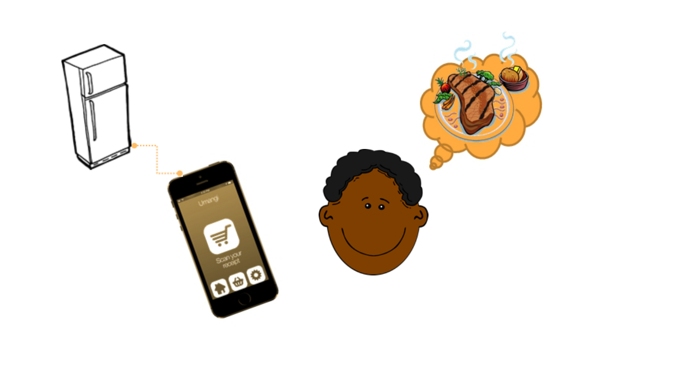

Milestone 3
Please Refrigerator

Outline
Quick recap & Key Tasks
Method
Personas
Scenarios

Quick recap &
Key Tasks
Our Product: Intelligent Refrigerator
Key tasks:
1. The refrigerator can tell us what we can cook via
these ingredients inside!
2. "Remind" us or send the message to our phones
about the expiry date, it would reducing wasted
food at home.
3. Let us know the food position in the refrigerator so
that we will not find it in a long time.

Method
We create our personas ans scenarios from
our interviewing data and product’s key tasks.

Personas
1. Japanese food restaurant owner - Mr. YAMATA
2. Housewife - Cindy
3. Student who rent a house outside the school - Hackman
“I want to provide the most delicious,
and the freshest food to my customer.
That is my responsibility.”
Name: Yamata
Age: 38
Occupation: Japanese food
restaurant owner
Marital status: Single
Goals Let the food ingredients always stay fresh.
Easily to find the expired food and throw it away.
His refrigerator always has enough food.
“I love my husband and child, but
discount is my Achilles’ heel. I usually
buy too many things”
Name: Cindy
Age: 40
Occupation: Housewife
Marital status: Married
Goals Cook delicious and various meals for her family.
Put the vegetables and fruits in order in short time.
Have more time to spend with her child.
Name: Hackman
Age: 23
Occupation: Student
Marital status: Single
“I rent a house outside the school, but
I am not familiar with here. Even
though I want to cook, I don’t know
where to buy and how to choose.”
Goals
Someone can help him to buy food ingredients before he goes home.
Someone can tell him some cooking tips to cook more delicious food.
Have spare time to do the things he likes.
.

Scenarios
Scenarios 1
Japanese food
restaurant owner
One day in the morning, the sky is still dark, Mr. YAMATA
wakes up at 4 am. He notices that there is a message sent from
the refrigerator to his cellphone. It says that there is some food will
be expired in next few days, and some is running out. He then
drives his van to the market near the harbor. After he arrived the
market, he chats with the fishmonger like old friends, and the
fishmonger will provide him some fresh fish to buy. Mr. YAMATA
choose fresh fish strictly in order to let his customer enjoy the meal
and also buy some food that the refrigerator told him that are going
to run out. After his shopping, he then drives back to his Japanese
food restaurant. He checks the expired food from the monitor on
the refrigerator door, and take it out, and put the fresh fish and
new food into the refrigerator and input the expiry date to the
refrigerator in order to let the refrigerator remind him next time.
And he prepares to open his Japanese food restaurant, such as
setting the tables and chairs, and waiting for his customers to
come.
Scenarios 2
Housewife
In a very sunny day, Cindy went out strolling around the food
market. As usual, Cindy shopped vegetables and fruit causally.
When she finished shopping and was about to going home, she
noticed that there was a group of people gathering together. She
went over to see what was going on. She found that there were
many vegetables and the prices were very cheap. Therefore, she
began buying vegetables again. After coming home, Cindy opened
the door of refrigerator and put all the food in it. And she went to
pick up her child. After that, Cindy began to prepare cooking
dinner. She wanted to cook a fish cooking. However, when she
opened the refrigerator, she found that all food was in a mess. She
decided to use refrigerator monitor to search the position of fish,
and the monitor showed the position of fish. Cindy got the fish out
and began to cook.
Scenarios 3
Student
Hackman is in the middle of UI/UX class. He find himself is
dying for having curry for dinner. Therefore, he start the application
on his cell phone and login in. The application has a "recommand
recipe" page. He select this page and type in "curry". The
application return several results. He click on one recipe most
attracting him. The application shows the ingredients of this recipe.
And there is a notification beside to let Hackman knows what is the
recipe needed ingredients but not in his refrigerator. And there is a
button beside named "put it in the cart". He find there is no
potatoes in his refrigerator. He click the "put it in the cart" and buy
this item. He goes home at 18:00 and the ordering item is arrive on
time. Now, Hackman has all the ingredients needed to cook curry.
He start to cook and use the application showing him the steps.
Finally, Hackman make a wonderful curry and have a great time.
